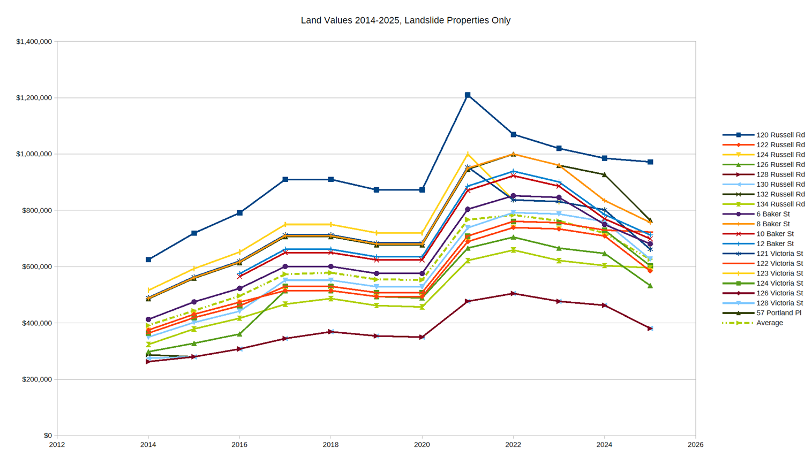
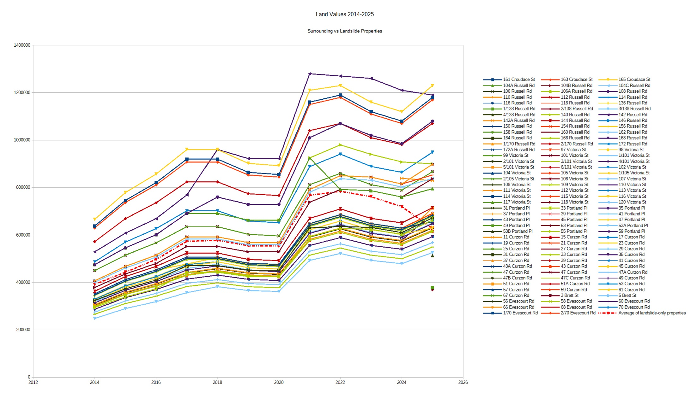
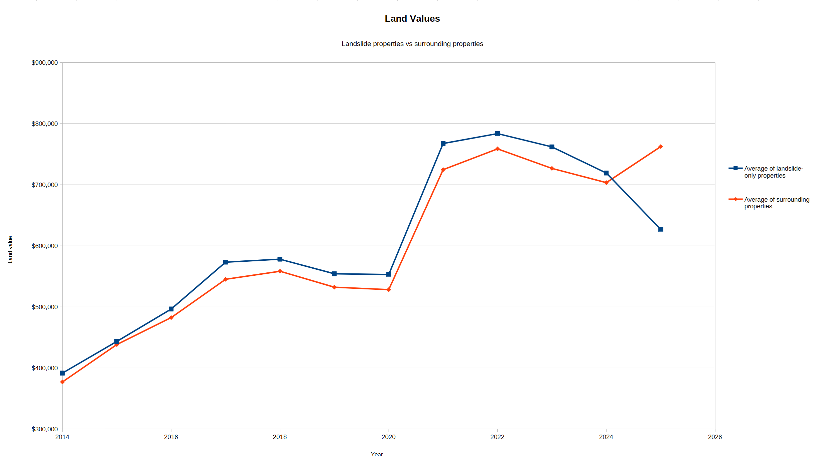

Files
This document is the second revision of a proposal for a geotechnical investigation put together by RCA for the City of Newcastle (Council), dated the 25th of July, 2025. (Affected) residents began requesting to see it some time in July (exact date t.b.c.) but Council would only agree to hand it out in person at a meeting on the 10th of September.
Summary: This proposal follows on from RCA's preliminary geotechnical assessment that they delivered to NCC in June 2025. It is unclear who will own the report- RCA mention consulting on "requirements for the investigation and outcomes" with both CoN and TfNSW (the RTA), yet the proposal is addressed only to CoN.
The proposal is for a geotechnical investigation that will seek to understand site conditions, and from that, provide suggestions of how to re-do the roads and the storm water.
This document is a corrected transcript of a parlimentary review into "the [NSW Recovery Authority's]...response to the May 2025 east coast severe weather event and other related matters" around the state.
On pages 41 and 42 they talk about the New Lambton Landslide. The Chairman says "Obviously the RA have declined to take that (the landslide) on and left it in the hands of council." A Kylie MacFarlane, Deputy CEO and COO of the Insurance Council of Australia, seems to refer to an undefined power of Council's over the private properties, saying "That (rebuilding houses) does require a council decision".
This document is the NSW Government's submission to the 2025 parliamentary review into the operations of the NSW Reconstruction Authority regarding the NSW East Coast severe weather from May 2025. A few things to note:
The severe weather event is described as a "significant and complex disaster" and has the Australian Government Reference Number AGRN 1212.
Buy-backs: "The RA did not exercise its planning powers (land & housing buybacks and compulsory acquisitions) in response to AGRN 1212." It has, however, exercised them previously and describes occasions in section 3.1 where it did so roughly 3 months after being requested by council.
They observe, in section 3.2, that there was some confusion from unnamed council/s around the RA's ability to exercise powers, "particularly section 68" (ministerial authorisations).
The only mention of landslide is in the "Reflection", where it is mentioned alongside other disasters included in the development of something called "Disaster Adaption Plans".



Definitions, Explanations & Labels
AGRN 1212
The government disaster number given to the east coast low of May 2025. I (MM) am yet to encounter a document that clearly includes or excludes the New Lambton Landslide as part of AGRN 1212, but from reading documents it seems to be excluded ("...the landslip is being treated as a separate issue..." "...the landslip at New Lambton has been explicitly excluded from the Regional Recovery Committee's scope..." sources, "Obviously the Reconstruction Authority have declined to take that (the New Lambton Landslide) on and left it in the hands of council." source).
Disaster
A disaster, as defined in the legislation, does not have to have a natural cause.
In the NSW Reconstruction Authority Act 2022 No 80 legislation (current as of 22 Jan 2026), to quote, "disaster includes the following—
(a) natural disasters, including, for example, bushfires, coastal hazards, cyclones, earthquakes, floods, heatwaves, landslides, severe thunderstorms, tornadoes and tsunamis,
(b) hazards caused by natural disasters including air pollution, water and soil contamination and water insecurity,
(c) other emergencies in relation to which the Minister has requested assistance from the Authority,
(d) other emergencies in relation to which—
..(i) a public authority, including a Minister other than the Minister administering this Act, has requested assistance from the Authority, and
..(ii) the Authority has agreed to provide assistance,
(e) events, incidents or matters, or classes of events, incidents or matters, prescribed by the regulations."
Gully
A ravine formed by the action of water.
Landslide/Landslip/Slip
These terms are interchangeable, but the preferred geotechnical term in Australia is "landslide". A landslide is the failure, at any speed, of a mass of earth, causing it to mobilise. It can be gradual or sudden, and comprised of mud or sand or boulders... any combination of rock/soil, and typically occurs when saturated with water. Once a landslide occurs, it is geologically and geotechnically considered a landslide until tectonic forces or a concerted human effort cause it to become otherwise. That is to say, it remains "a landslide" effectively forever.
Scarp
A scarp is the cliff-like feature that is created at the top after a landslide occurs. It can be very small or very large. There is usually more than one scarp, and they can be continuous or discontinuous.
I include this definition here because I keep running into the belief that the scarp of the New Lambton Landslide that is visible from many places around town was not created by the landslide at all, but was created by Council as part of some kind of remediation effort. I think it's important that people understand that that cliff is in fact a scarp. -MM
Toe
The toe of the landslide is the bottom part of it. The toe of the New Lambton Landslide would encompass roughly 6 and 8 Baker St, the rear of 134 Russell Rd, 128 Victoria St, the area of Baker St between the Creek and Victoria St, and the part of 59 Portland Place that lies north of the Creek.
I include this definition because I have heard more than once "I thought it started at the top". Landslides rarely "start at the top". This landslide "started", as the GIF on the home page shows, at the bottom, when the weight of the toe was reduced so much that it was too light to resist the downward force of all the material above it, and the excess groundwater reduced the soil's ability to hold itself together, forcing the toe to move down and then everything else above it to move down in turn.
Landslides of this type come to a halt only when the weight & strength of the toe is once again sufficient to resist the downwards forces of everything above it. Removing mass from the toe, increasing the weight above it, or increasing the saturation of groundwater can cause the landslide to move again. This will remain the case effectively forever or until extensive remediation work is carried out.